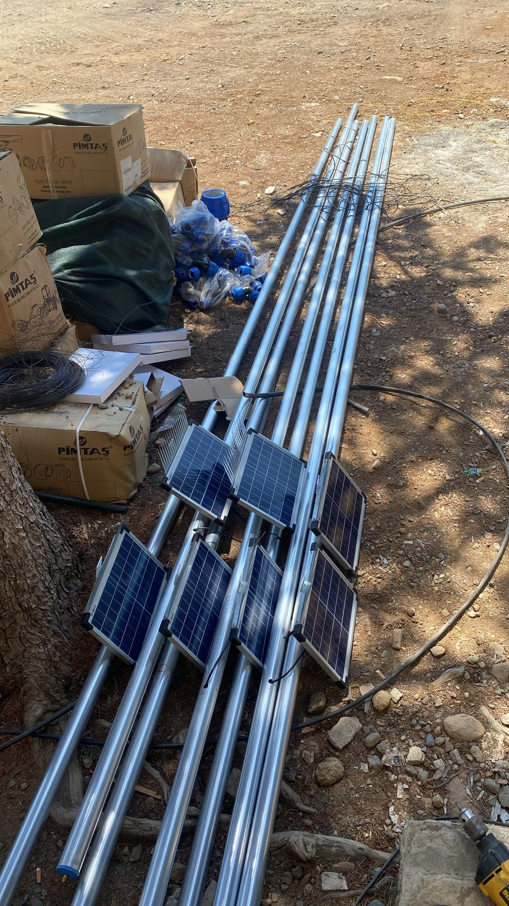
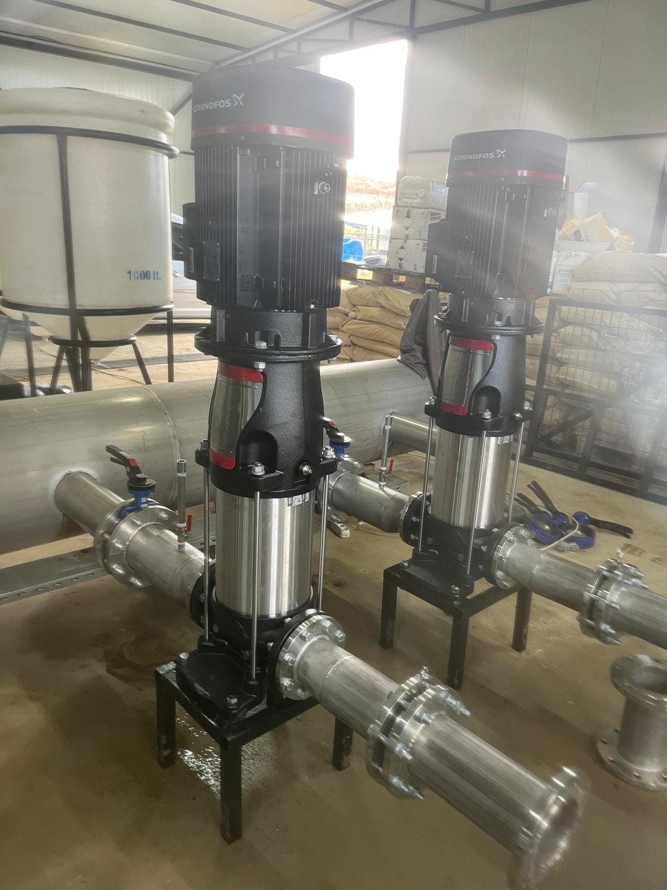
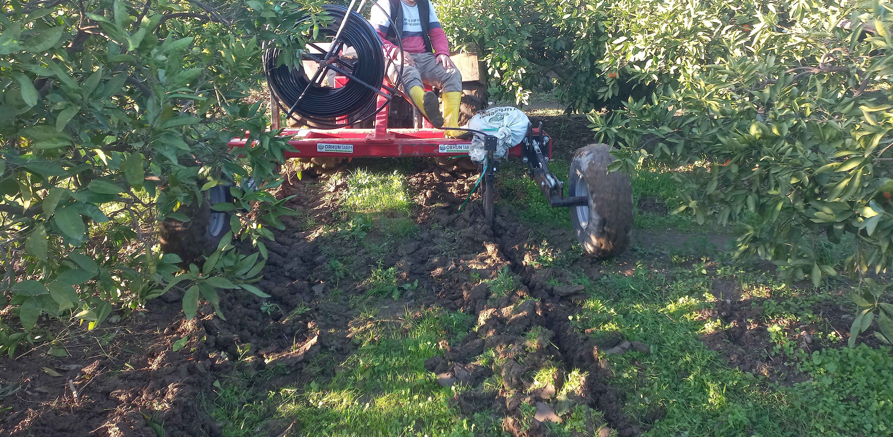
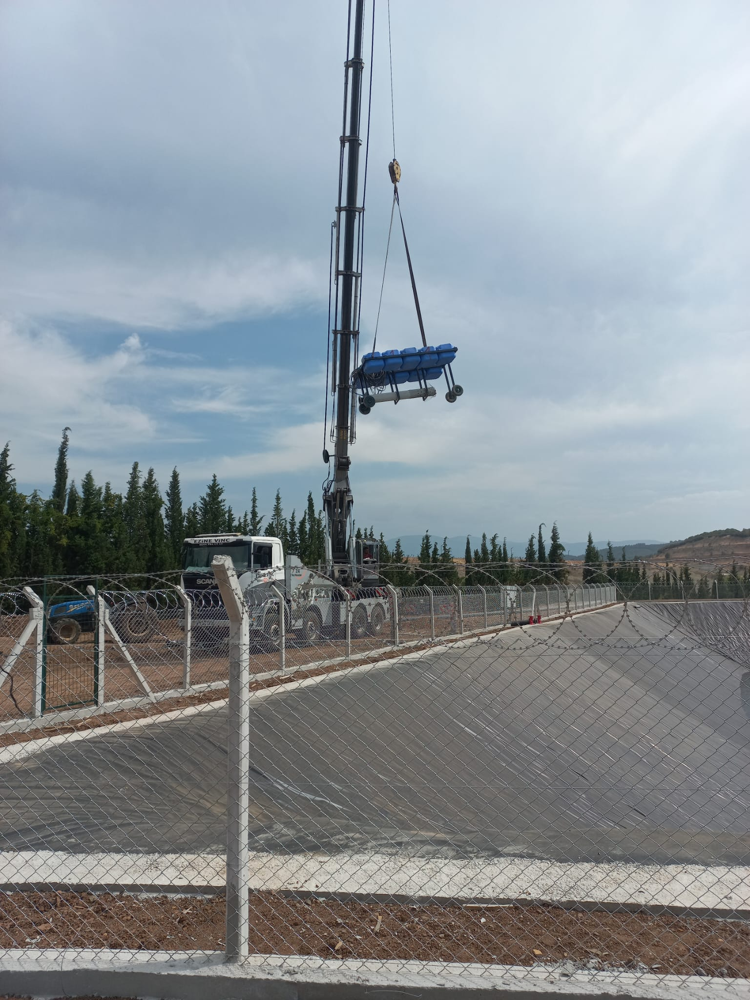
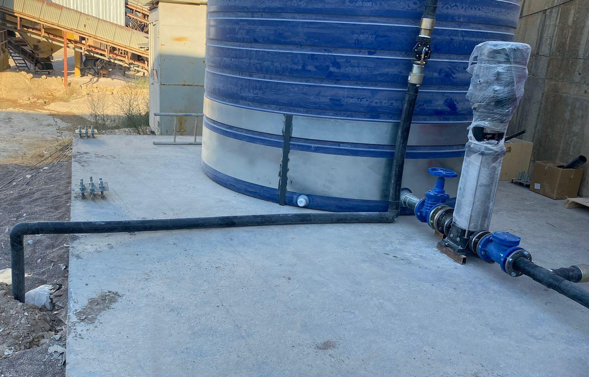
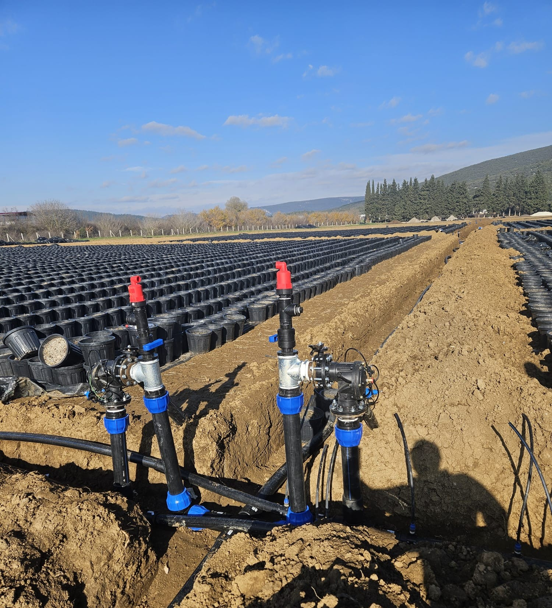
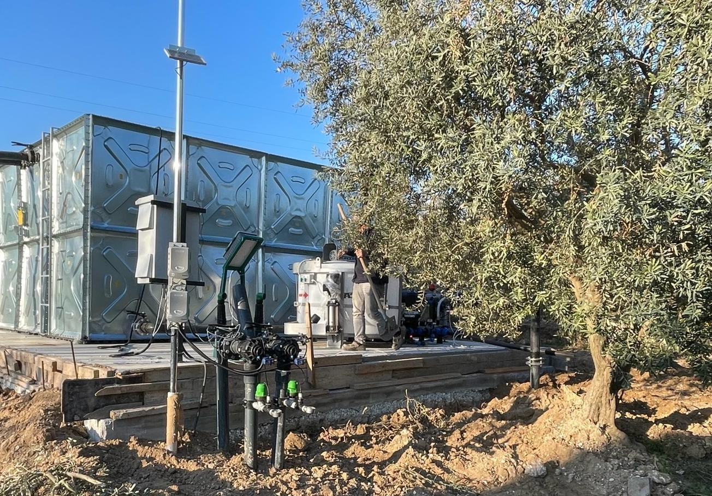
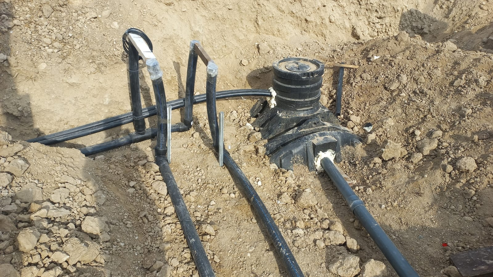

Sulama, gübreleme ve otomasyonu tek mühendislik altında topluyoruz.
Türkiye'de sulama yatırımlarının büyük bölümü yanlış soruyla başlar: "Hangi damlatıcıyı alalım?"
Doğru soru şudur: Bu arazide, bu su kaynağıyla, bu bitki için — ne kadar suyu, ne zaman, hangi yöntemle ve hangi gübre çözeltisiyle vermem gerekiyor?
Bu soru cevaplanmadan seçilen her ekipman, bir tahmindir. Ve tahminin bedeli genellikle ilk sezonda değil, üçüncü yılda ortaya çıkar: tıkanan damlatıcılar, dengesiz basınç, kök bölgesinde tuz birikimi, beklenenin altında verim.
İrriga Mühendislik, bu soruyu cevaplamak için kuruldu.
Sulama, gübreleme ve otomasyon ayrı işler değil, aynı sistemin üç yüzüdür.
Hidrolik hesap, sistem seçimi, boru ve pompa tasarımı, basınç yönetimi, filtrasyon.
Fertigasyon mimarisi, dozajlama, EC/pH kontrolü, çözelti uyumluluğu ve karışım planı.
Saha kontrolü, toprak nemi ve iklim ölçümü, uydu görüntüleri, veriye dayalı sulama kararı.
Gübreleme planı bilinmeden filtre seçilmez; otomasyon senaryosu bilinmeden vana bölümlemesi yapılmaz. Sektörde bu üçü çoğunlukla farklı firmalar tarafından, birbirinden habersiz kurgulanır. Sonucu sahada görüyoruz.
Bir sulama projesi, ekipman seçimiyle değil ölçümle başlar: su analizi, toprak, topoğrafya, bitki su ihtiyacı. Ekipman seçimini tasarımın sonunda yaparız, başında değil.
Her teklifin ekinde bir Tasarım Esasları Özeti vardır: kabul edilen su ihtiyacı, pik debi, bölge sayısı, filtrasyon seçim gerekçesi ve gübreleme yaklaşımı.
Birlikte çalıştığımız çözüm sağlayıcılarının ürün gamını yakından tanıyoruz: hangi malzeme sizin arazinize uygundur, hangi kontrol ünitesi hangi ölçekte doğru cevabı verir.
Seçimi bu bilgi belirler, elimizde ne olduğu değil. Bir projede daha ekonomik bir çözüm yeterliyse, pahalı olanı önermeyiz.
Bir sistem, su verdiği anda değil doğrulandığı anda teslim edilmiş sayılır: hatlar yıkanır, basınç testi yapılır, damlatıcı debisi ölçülür, sonuç hesapla karşılaştırılır.
Kapsam, süre, garanti ve fiyat yazılıdır. Teslimden sonra bakım programını yazılı olarak bırakırız.
Hem bitki su tüketimi ve sensör teknolojisi üzerine yıllarca araştırma yaptık, hem de yüzlerce projeyi çizip sahada kurduk. Bu ikisini bir arada yapan firma sayısı Türkiye'de azdır.
Kurucu, Şirket Müdürü — Ziraat Mühendisi, Dr.
Ege Üniversitesi Ziraat Fakültesi, Tarımsal Yapılar ve Sulama Bölümü (lisans, yüksek lisans, doktora). Doktora: topraksız tarımda kök bölgesi nem algılayıcıları ile sulamanın yönetimi ve yapay sinir ağları ile bitki su tüketiminin tahminlenmesi. Yüksek lisans: açık ve kapalı besleme sistemlerinde tuzluluğun bitki tepkisine etkisi.
Ege Üniversitesi Araştırma Görevlisi (2009–2015) — FLOW-AID ve AQUATAG uluslararası projeleri. Teknotar / Devint (2015–2022) — 200'ün üzerinde proje, tasarımdan devreye almaya. Agrodrip (2022–2026).
15'in üzerinde ulusal ve uluslararası bilimsel yayın — sera sulama otomasyonu, toprak nemi algılayıcıları, kısıtlı sulama, bitki su tüketimi modellemesi.
İrriga Ağustos 2026'da kuruldu. Aşağıdaki işler, kuruluştan önce yürütülen çalışmalardır. Kuruluş sonrası projeler teslim sonrası yayımlanacaktır.

Manisa · 150 dekar · 2025
Su kaynağı: derin kuyu · Damla sulama + pompaj
Kapsam: Tasarım · Uygulama · Devreye alma

Muğla · 1.200 dekar · 2025
Su kaynağı: kanal · Damla sulama
Kapsam: Uygulama · Devreye alma

Manisa · 150 dekar · 2024
Su kaynağı: derin kuyu · Toprakaltı damla sulama (SDI)
Kapsam: Tasarım · Uygulama · Devreye alma

Çanakkale · 600 dekar · 2024
Yüzen dalgıç pompa
Kapsam: Tasarım · Uygulama · Devreye alma
İzmir · 40 dekar · 2025
Su kaynağı: derin kuyu · Saksıda yetiştiricilik, sulama ve otomasyon
Kapsam: Tasarım · Uygulama · Devreye alma

İzmir · 200 dekar · 2025
Su kaynağı: derin kuyu · Endüstriyel toz bastırma
Kapsam: Tasarım · Uygulama · Devreye alma

İzmir · 50 dekar · 2024
Su kaynağı: derin kuyu · Toprakaltı damla sulama (SDI)
Kapsam: Tasarım · Uygulama · Devreye alma

Manisa · 7 dekar · 2026
Su kaynağı: derin kuyu · Topraksız tarım, sulama ve otomasyon
Kapsam: Tasarım · Uygulama · Devreye alma

Erzincan · 45 dekar · 2026
Su kaynağı: derin kuyu · 5 sera, sulama ve otomasyon
Kapsam: Tasarım · Uygulama · Devreye alma
Mevcut bir sisteminiz varsa neyin iyileştirilebileceğini, yeni bir yatırım planlıyorsanız nereden başlamanız gerektiğini konuşalım.
Projenizi konuşalım